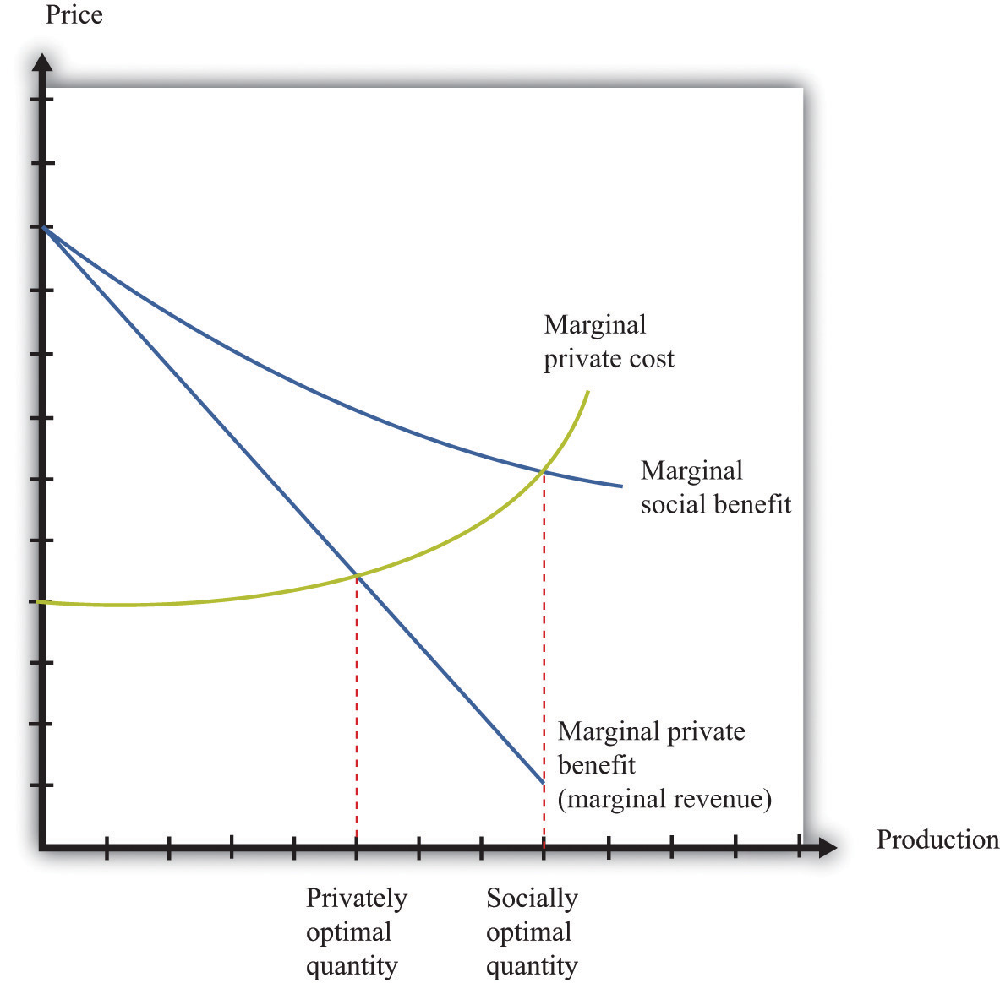

At the heart of the social dilemma is a divergence between private costs and social costs. Individuals and firms take into account only private costs when making decisions. But the social costs should matter as well. Thus actions that are individually optimal are damaging to society as a whole. Now that we have diagnosed the problem, how do we fix it? The economist’s answer is that we must change people’s incentives. A social dilemma arises when individual incentives are not well aligned with the interests of society as a whole. Economic policies focus on how to adjust those incentives so that there is a better match between individual and social aims.
Before discussing these policies in detail, we look again at the problem of the social dilemma, focusing now on the actions that people choose to take. In our Mexico City example, people decide whether or not to drive. If they choose to drive, this action affects the well-being of others. Economists say that there is an externalityThe direct cost imposed or direct benefit bestowed by one person’s actions on others in society. associated with the action of driving.
Toolkit: Section 31.19 "Externalities and Public Goods"
An externality occurs when one person takes an action that directly affects another’s welfare, but the effect does not operate through prices.
An externality must come from an action—something that somebody does. Good weather is not an example of an externality. Nor is an earthquake. The action could be taken by an individual (say, smoking a cigarette) or a firm (dumping toxic waste into a river). In most cases, the action is associated with production by a firm or consumption by a household.
In addition, the action must directly affect another individual’s well-being or a firm’s profits. It could be something that affects the health or happiness of an individual. It could be something that affects the profits of a firm. (“Directly” here means that the effect doesn’t come about because of an induced change in behavior. Suppose, for example, that a firm offers you a job, but to get to that job you now must spend a longer time commuting. The extra commute is not an externality imposed on you by the firm.)
Finally, the effect must not operate through prices. Whenever we take part in market transactions, we have effects (usually tiny effects but effects nonetheless) on market prices. These changes in prices make others in the market better or worse off. But they are not externalities.
In our earlier example of driving, the marginal social cost was larger than the marginal private cost. The gap between the two is a measure of the size of the externality. Because the action of driving imposes a cost, we call this a negative externalitiesThe direct cost imposed by one person’s actions on others in society.. Pollution is the classic example of a negative externality, but there are others. Congestion of public roads or public parks is another instance of a negative externality.
By contrast, there are also occasions when an action bestows an external benefit on third parties. We call this a positive externalitiesThe direct benefit bestowed by one person’s actions on others in society.. For example, writers of open-source software create a social benefit that is in excess of the private benefit that they personally obtain. As another example, suppose that a firm engages in research and development and creates new knowledge. If others are also able to benefit from that knowledge without paying for it (for example, after the expiry of a patent), they are beneficiaries of a positive externality.
Toolkit: Section 31.19 "Externalities and Public Goods"
Although negative externalities sound bad and positive externalities sound good, positive externalities are also a source of inefficiency. The logic exactly parallels the case of negative externalities. Suppose a firm is deciding how much output to produce. To maximize its profits, it sets marginal cost equals to marginal private benefit (that is, marginal revenue). But if the firm’s production generates a positive externality, the marginal social benefitThe benefit to society of consuming or producing one more unit of a good or service. exceeds its marginal private benefit. The firm produces insufficient output from a social point of view, as illustrated in Figure 14.4 "A Divergence between Marginal Private Benefit and Marginal Social Benefit". The principle for socially efficient production is for the firm to produce up to the point where marginal cost equals marginal social benefit.
Figure 14.4 A Divergence between Marginal Private Benefit and Marginal Social Benefit
From a social point of view, however, the firm should produce up to the point where marginal social benefit equals marginal cost.
The definition of an externality makes it clear that the fundamental problem is one of behavior—actions by a firm or a household. The behavior reflects a difference between private costs or benefits and social costs or benefits. These observations also point us to a solution. We need to change incentives so as to align private costs or benefits and social costs or benefits. For example, if the private marginal cost of pollution to a firm were somehow equal to the social marginal cost, then a firm acting in its own self-interest would produce the socially optimal amount of pollution. The challenge for policymakers is to find a way to adjust the incentives so that the firm takes into account social marginal costs in addition to private marginal costs.
From this perspective, inefficiency arises because there are no market signals that force the polluter to take into account how its actions are affecting others. The goal of government policy in the presence of externalities is to provide incentives for firms and households to internalize their effects on others. These policies include direct restrictions on what people can do (for example, banning smoking in public buildings), taxes and subsidies that affect prices in an economy, and the introduction of markets that force polluters to pay for the right to pollute. Because externalities involve a divergence between private costs and social costs (or private benefits and social benefits), the goal in all cases is to adjust the incentives so that the actor internalizes the externality.
We said that externalities are a source of inefficiency, but we should be more precise: externalities are a source of inefficiency unless they are compensated for. Think back to the smoker and nonsmoker who shared an office. The smoker’s actions impose a negative externality on the nonsmoker. Without any compensating payments, we end up with an inefficient outcome. But when the smoker pays the nonsmoker for the right to use up the clean air, we end up with an efficient outcome. Negotiation between the smoker and the nonsmoker in effect creates a market for the clean air. Once this market is in place, the inefficiency disappears.
Building on this insight, governments can actively try to create markets to solve pollution and other externality problems. A good example of this is the 1990 Amendments to the Clean Air Act in the United States. Much of the air pollution in the United States is caused by utility companies (think of power stations), particularly those that generate electricity from coal. Such power stations pump sulfur dioxide into the atmosphere, which causes acid rain and other environmental problems. The amendments to the Clean Air Act created tradable emission permitsA license to emit a specified amount of pollution. that were allocated to utility companies.
Such permits are licenses to emit a specified amount of pollution. A firm must own or purchase a permit if it wishes to emit pollutants into the atmosphere. These permits can be traded in a market. A firm that wishes to emit more pollution than allowed by its existing permits can purchase permits from others. A firm with more permits than it needs can sell them to other firms.
The first response of many people to a policy such as this is moral outrage. At first hearing, it may seem odd that the government is granting a license to pollute. In fact, this can be a very effective way to control pollution. To see how such a system works, suppose that there are two power stations.
Suppose the government decides that it wants to restrict the amount of pollution to a total of 200,000 tons per year, down from the current 400,000. It doesn’t matter which power station emits the pollution; either way, the sulfur dioxide ends up in the atmosphere.
One approach is for the government to simply instruct each power station to cut its emissions by 50 percent. The trouble with this is that GreenPower already has an environmentally friendly system in place. It will cost $1 million (= 50,000 tons × $20 per ton) to reduce its emissions from 100,000 tons to 50,000 tons. Atmosfear has to reduce its emissions by 150,000 tons, which costs $1.5 million (= 150,000 tons × $10 per ton). The total cost of reducing emissions to meet the target is $2.5 million.
There is a better alternative. Suppose the government gives each power station a license to emit a certain quantity of pollution. For example, suppose it gives GreenPower a license to emit 50,000 tons and Atmosfear a license to emit 150,000 tons. So far, this is identical to the previous situation. Crucially, though, the government also allows the power stations to trade these licenses. If GreenPower can buy the right to emit sulfur dioxide for less than $20 per ton, it will prefer to do this rather than reduce its own emissions.
Because it costs Atmosfear only $10 per ton to reduce its emissions, the cheapest way to achieve a 200,000-ton reduction is for Atmosfear to carry out the entire reduction in emissions, down to 100,000 tons. If it does so, then it will have 50,000 unused permits that it can sell to GreenPower. The total cost of emissions reduction in this scenario is only $2 million. For example, suppose they agree on a price of $15 per permit. Then the cost to GreenPower is $50,000 × $15 = $0.75 million (instead of $1 million). The cost to Atmosfear is $1.25 million: $200,000 × $10 = $2 minus the $0.75 million it collects from GreenPower.
In some ways, this is like our smoking example. The power stations are able to trade, so they can both be better off. Emissions are reduced to the required level of 200,000 tons, and this reduction is achieved in the most cost-effective manner. Notice also that the government gets to decide on the total amount of acceptable pollution; the approach is consistent with very tight or very lax environmental standards. However, once the government has determined its desired level of pollution, the trading of permits allows the necessary reductions in pollution to be achieved at the lowest possible cost to society.
With tradable permits, pollution is controlled in the most efficient way, without regulators’ needing detailed knowledge on different power stations. The trading system has some other advantages as well. Firms have an incentive to pollute less because they can sell excess permits for a profit if they do not need to use them. Environmental groups can even purchase emissions permits and take them out of circulation to reduce pollution below the level mandated by the government.
A more contentious question has to do with how the permits are allocated in the first place. One approach is to do what we did in our example: the government can simply allocate permits based on the existing level of emissions. A problem with this policy is that it effectively punishes firms that have already engaged in environmentally responsible changes. It also creates an incentive for lobbying by firms: because permits are valuable, firms will invest resources in trying to persuade policymakers to give the permits to them rather than to their competitors. Instead of giving away the permits, the government can instead auction them. This increases costs for the firms but has the advantage that it generates funds for the government.See Chapter 6 "eBay and craigslist" for a discussion on auction mechanisms.
Remember that the problem with externalities is that private incentives do not reflect social costs and benefits. Another approach to fixing these incentives is through taxes and subsidies.
Consider first the case of a negative externality. The problem in this case is that the marginal social cost exceeds the marginal private cost. As we saw in Figure 14.3 "A Divergence between Marginal Private Cost and Marginal Social Cost", this leads to overconsumption of a good. One way to fix the problem is to impose a tax that equals the difference between the marginal private cost and the marginal social cost. In effect, this converts the condition for private optimality (consume until marginal benefit equals marginal private cost) into the condition for social optimality (consume until marginal benefit equals marginal social cost).
The case of a positive externality is entirely analogous. The problem is that the marginal social benefit exceeds the marginal private benefit. As we saw in Figure 14.4 "A Divergence between Marginal Private Benefit and Marginal Social Benefit", this leads to underproduction of a good. One way to fix the problem is to impose a subsidy that equals the exact difference between the marginal private benefit and the marginal social benefit. This converts the condition for private optimality (consume until marginal private benefit equals marginal private cost) into the condition for social optimality (consume until marginal social benefit equals marginal cost).
We see such policies in practice. Taxes on gasoline exist in part to compensate for externalities such as the pollution caused by automobiles and the wear and tear on roads. Subsidies to universities and think tanks exist in part to encourage the production of knowledge, which is a good with positive externalities.
There are also other kinds of environmental policies. The government can simply mandate that certain levels of pollution must not be exceeded. In some cases, such command and controlRegulation in which there are mandates for maximum permissible levels of pollution. regulation may be easier to implement and monitor.
Under most circumstances, economists favor either taxes or the creation of a permit market to command and control. The reason is that command and control is relatively inflexible and requires a lot of knowledge of how much pollution is generated by each individual firm. Taxes, subsidies, or permit markets are more flexible and do a better job of changing the incentives faced by polluting firms.
A rather different approach to externalities is to appeal to people’s altruism. In economics, we typically assume that people consider only their own self-interest when making decisions. Moreover, we usually think of this self-interest in fairly narrow terms. This may seem a rather embittered view of human nature. People often do things that are directed toward others’ happiness rather than their own—that is, people are sometimes altruistic rather than selfish. In the environmental context, people sometimes purchase products from environmentally responsible firms even if those products are more expensive. People sometimes purchase carbon offsets to compensate for the carbon generated by their driving or air travel. Companies often find it worthwhile to advertise the fact that they are environmentally responsible.
Governments also provide environmental information. The European Union has recently proposed measures requiring that new cars display their impact on global climate change, just like health warnings on cigarettes.See Ian Traynor and David Adam, “It’s Lean and Mean, but Is It Green? EU Plans Clampdown on Car Ads,” Guardian, June 5, 2008, accessed February 28, 2011, http://www.guardian.co.uk/environment/2008/jun/05/carbonemissions.carbonfootprints. Unlike health warnings on cigarettes, this labeling does not help people live healthier lives. And unlike efficiency ratings on appliances, this labeling does not help people make better decisions that will save them money. Climate change labels appeal purely to people who want to act in a way that will lessen their environmental impact. As we saw earlier in the chapter, purchases of hybrid cars seem to be primarily motivated by people’s desire to be more environmentally responsible.
Psychologists and economists have studied why people sometimes behave in such ways. Perhaps it is because they are genuinely altruistic—they care about the well-being of others as well as themselves. Perhaps it is because of persuasion and peer pressure—if your friends behave in an environmentally conscious way, then there is pressure for you to do the same thing. Perhaps it is because of the feeling of satisfaction (sometimes called a “warm glow”) associated with such behavior. For our purposes in this chapter, however, the exact reasons why people behave this way are less important than the behavior itself. There are several ways of thinking about altruistic behavior, but in the environmental context, altruism really amounts to people deciding to internalize some of the externalities that they impose. They incorporate some of the social cost into their own private costs. Governments, through advertising campaigns, can encourage such altruistic behavior.
Our discussion of externalities makes it seem that it is straightforward for policymakers to design effective environmental regulation. Government regulators simply need to calculate the difference between marginal private costs and marginal social costs and between marginal private benefits and marginal social benefits. Then they can put in place the appropriate taxes, subsidies, or both.
In practice, a major difficulty is knowing how to place values on externalities. Environmental policies to combat air or water pollution require the government to monitor the amount of emissions effectively and accurately. If emissions cannot be monitored, then tax or permit schemes are impossible to implement. Effective environmental policies also require the government to measure the damage incurred by the victims of the pollution.
As with many economic policies, questions also arise concerning the distribution of resources. In an environmental context, the key point of debate is often whether compensation should and will be paid. If a factory pollutes the river running through a town, imposing negative externalities on the town’s residents, then is it enough to adjust the incentives so that there is the “right” amount of pollution—that is, so that the marginal benefit to the firm equals the marginal social cost? Or should the firm also be required to compensate the residents of the town? This is again a question of property rights, for we are really asking who has the initial right to the clean water in the river. It is also closely related to the question of whether pollution permits should be given away (implying that firms have the property rights) or sold at auction.
Whenever government steps in and enacts policies to affect behavior, it also must worry about whether there will be perverse responses to those incentives. As an example, the disposal of solid waste is a significant environmental problem in many countries. It is in part an economic problem: people do not usually pay directly for the removal of their garbage, so they do not have an incentive to recycle or avoid waste in other ways. A solution—favored by many economists and adopted by some municipalities—is to charge people a fee per bag for garbage removal. A study by Don Fullerton and Tom Kinneman revealed that this policy can bring its own problems.Don Fullerton and Thomas Kinneman, “Household Responses to Pricing Garbage by the Bag,” American Economic Review 86, no. 4 (1996): 971–84. When such a scheme was introduced in Charlottesville, Virginia, citizens responded by putting much more garbage in each bag than they used to (Fullerton and Kinneman called this the “Charlottesville stomp”), so the reduction in the waste stream was lower than the authorities had anticipated. More seriously, some people also responded by dumping their trash illegally.
The measurement of environmental harm is complicated. Suppose, for example, that pollution brings with it increased risk of disease or death. How do we place a cost on these risks? We can perhaps attempt to value health in terms of the costs of treatment and lost working hours, but it is much harder to place a value on the distress and suffering caused by ill health. Economists, lawyers, and others have even come up with varying ways to place a dollar value on human life, but—as you can surely imagine—these techniques are contentious. One reason is that all such approaches tend to rely, at least in part, on estimates of lost earnings. This means that the lives of skilled and high-paid individuals may end up being valued more than the lives of unskilled, lower-paid individuals.
A second set of issues has to do with how we value damage to the natural environment. Take, for example, the oil leak in the Gulf of Mexico in 2010, which caused substantial harm to birds, fish, and ocean ecosystems. Most of us are upset by the sight of seabirds with their feathers clogged with oil. But how should we assess the value of such damage? Similarly, what is it worth to ensure the survival of a particular endangered species?
Where possible, economists look to market prices to provide some indication of the value that society places on goods and services. In the case of environmental goods, though, we typically cannot look to markets. In such cases, we may need to use surveys and other methods for inferring household valuations. This is known as contingent valuationThe techniques used for eliciting the values that individuals place on goods and services that are not bought and sold in the marketplace..
For several reasons, it is very difficult to carry out reliable contingent valuation surveys. In such a study, a household might be asked, “What would you be willing to pay to ensure that the whooping crane (for example) does not go extinct?” Such surveys often give implausible answers. For example, following an oil spill, people in Washington state and the province of British Columbia were supposedly willing to pay over $11,000 for each seabird that was saved—even though the seabird population would recover naturally in a decade or so.
The main problem, as you can perhaps guess, is that people do not face a real budget constraint when asked such questions, so they have no particular incentive to give a truthful answer. A related issue is that people are typically presented with an issue in isolation. A household that claims to be willing to spend $50 to save one species from extinction might not be willing to spend $10,000 to save 200 species at a cost of $50 each. A third issue is that people may not have the information they need to make good decisions. We are not used to making purchases of environmental quality, so it is harder for us to give our valuation of a clean river than it is for us to give our valuation of, say, a bar of soap.
Yet, for all these objections, we do need some way of placing a value on environmental resources. The fact that we find it difficult to measure such things does not mean that they have no value. Contingent valuation studies are now very sophisticated, and researchers are very active in the search to make such studies better and more accurate.
Another difficulty with environmental policymaking is that it is not always clear whose opinions should be taken into account when making environmental policy. For example, suppose there were a proposal to allow a major resort development at the Grand Canyon. Should that be the concern of residents of the area, the state of Arizona, or the entire United States? For that matter, should residents of other countries be entitled to a voice? After all, the Grand Canyon is one of the most spectacular sites in the world, visited by thousands of foreign tourists every year.
Perhaps you think it self-evident that foreigners should have no say in US environmental policy. Yet environmentalists in the United States and Europe have often voiced their opinion on the environmental consequences of policies in other countries, such as the construction of the Three Gorges Dam in China. Similarly, much of the world was outraged when, in 2001, the Taliban in Afghanistan destroyed two giant Buddhas that had been carved in the sixth century.
An even bigger problem has to do with the treatment of future generations. When you drive your car today, you are imposing costs not only on the living but also on those as yet unborn. The people most likely to be adversely affected by global climate change are not yet alive. How should we take into account their welfare and well-being? Scientists are largely in agreement that carbon emissions from the burning of fossil fuels will have an effect on global climate. Most environmental economists are convinced by this evidence, yet there continues to be disagreement among economists about the appropriate policy response. Most of that disagreement in the end comes down to different views about how to account for the welfare of future generations.
One of the biggest difficulties with designing environmental policy is uncertainty. Global climate change is the clearest example. Although there is widespread agreement that we face some risk of climate change from carbon emissions, there is debate about the size of the effect. It is possible that we are facing only a small change in global climate, in which case it might not be worth spending a lot of resources now on reducing emissions. It is also possible that there could be catastrophic effects on global climate, in which case we should spend a lot of resources right now on reducing carbon emissions. And it is probable that we are facing something in between these extremes. Policymakers must try to get good estimates of how likely these scenarios are and then must decide how risk-averseBeing willing to pay more than a gamble’s expected loss in order to avoid that gamble. they want to be when setting policy.
Because environmental problems are often not confined to a single country, international agreements are sometimes needed for effective environmental policy. The Montreal Protocol on Substances That Deplete the Ozone LayerUnited Nations Environment Programme, “Section 1,” Handbook for the Montreal Protocol on Substances that Deplete the Ozone Layer—7th Edition (2006), accessed March 14, 2011, http://ozone.unep.org/Publications/MP_Handbook/Section_1.1_The_Montreal_Protocol. is an example of successful international cooperation on environmental policy. In the 1970s, scientists recognized that certain chemicals known as chlorofluorocarbons (CFCs) were leading to a reduction in the atmospheric ozone layer. The ozone layer filters out dangerous radiation, so its destruction was linked to increases in skin cancer and other problems. The Montreal Protocol came into force in 1989 and has been signed by almost every country in the world. It mandated a gradual phaseout of CFCs, and current research shows that the atmospheric concentrations of CFCs have decreased as a result.
To date, however, there has been much less progress on the even bigger problem of global climate change. Although there has been much negotiation, there is still no international agreement on climate change that is comparable to the Montreal Protocol. In 1997, countries signed the Kyoto Protocol,United Nations Framework Convention on Climate Change, Kyoto Protocol to the United Nations Framework Convention on Climate Change, 1998, accessed March 14, 2011, http://unfccc.int/resource/docs/convkp/kpeng.pdf. which was the first major international agreement to address the accumulation of greenhouse gases in the atmosphere. Some countries—notably Canada, Australia, New Zealand, and most of Europe—committed to specific targets, while others made more general commitments. However, the United States did not ratify the agreement. Meanwhile, several of the largest emitters of greenhouse gases, such as China, India, and Indonesia, did not have any specific commitment to greenhouse gas reductions. As a result, the impact of the protocol is greatly limited. One interesting feature of the Kyoto Protocol is that it included provisions for emissions trading.
In 1999, the United Nations held another summit in Copenhagen, in an attempt to make more progress on this topic. The outcome of the summit was the Copenhagen Accord:United Nations Framework Convention on Climate Change, “Copenhagen Accord, Draft decision -/CP.15,” Copenhagen, December 7–18, 2009, accessed March 14, 2011, http://unfccc.int/resource/docs/2009/cop15/eng/l07.pdf. a declaration that climate change was a problem. However, no binding commitments on greenhouse gas emissions resulted. A follow-up meeting in Cancún, Mexico, in 2010, delivered the Cancún Agreement,United Nations Framework Convention on Climate Change, “Outcome of the work of the Ad Hoc Working Group on long-term Cooperative Action under the Convention, Draft decision -/CP.16,” accessed March 14, 2011, http://unfccc.int/files/meetings/cop_16/application/pdf/cop16_lca.pdf. which—although still not a binding treaty—was judged by many observers to represent significant progress over the Copenhagen Accord. Still, despite many meetings and fine-sounding commitments, the world is a long way from having an agreement on greenhouse gas emissions to match the Montreal Protocol.
Our discussion here has been about externalities arising from either the production or the consumption of goods and services. However, the idea of externality is used much more broadly in economics because it is a very helpful way of diagnosing inefficiencies.
One example comes from the working of labor markets. In general, both firms and workers spend time and resources trying to make a good “match.” Firms have human resource departments that spend resources advertising jobs, going through résumés, interviewing job applicants, and so on. Workers spend time preparing their résumés, interviewing at different firms, and so on. Both are willing to do this because a good match can be very beneficial: the firm gets a highly productive worker for which it is willing to pay a good wage.Chapter 9 "Growing Jobs" discusses search and matching in the labor market in more detail.
Now, the more effort the worker and the firm expend, the more likely they are to come up with a good match. And though each benefits individually from this effort, some of the benefit also flows to the other side of the market. In other words, if a worker tries harder to make a good match, this bestows a positive externality on a firm, and if a worker tries harder to make a good match, this bestows a positive externality on the worker.
As another example, is it a good thing if a new fast-food restaurant opens in your town? To answer this, we can think about the externalities that arise because of the decision to enter. When a new restaurant opens, it is providing a product that is similar but not identical to some of the offerings already in the market. It thus steals business from existing restaurants and reduces their profits. We can think of the entry of a new restaurant as imposing a negative externality on existing restaurants. Conversely, the entry of a new restaurant bestows a positive externality on consumers because they benefit from the increased choice. Thus the entry of a new restaurant leads to both positive and negative externalities.
We said previously that if an action has positive externalities, then there will be too little of that action from a social point of view. If an action imposes negative externalities, there will be too much of that action. In this example, the action is the entry of a new firm or product. If the positive externalities are more important, then there is too little entry, from a social point of view. If the negative externalities are more important, then there is too much entry. In general, we cannot draw any conclusions about whether there are too many firms (or products) or too few.